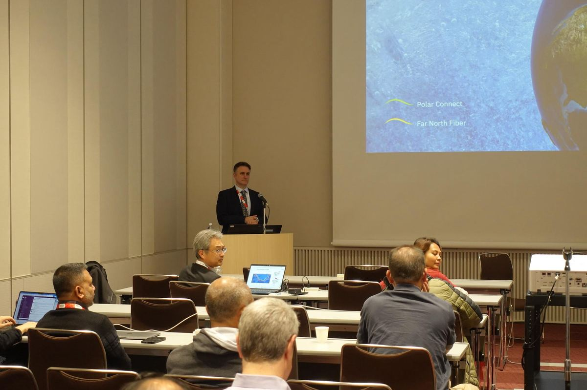
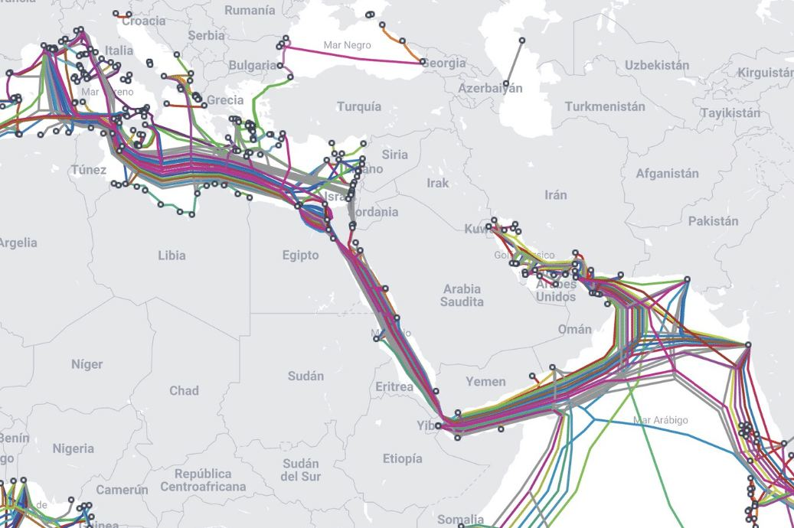
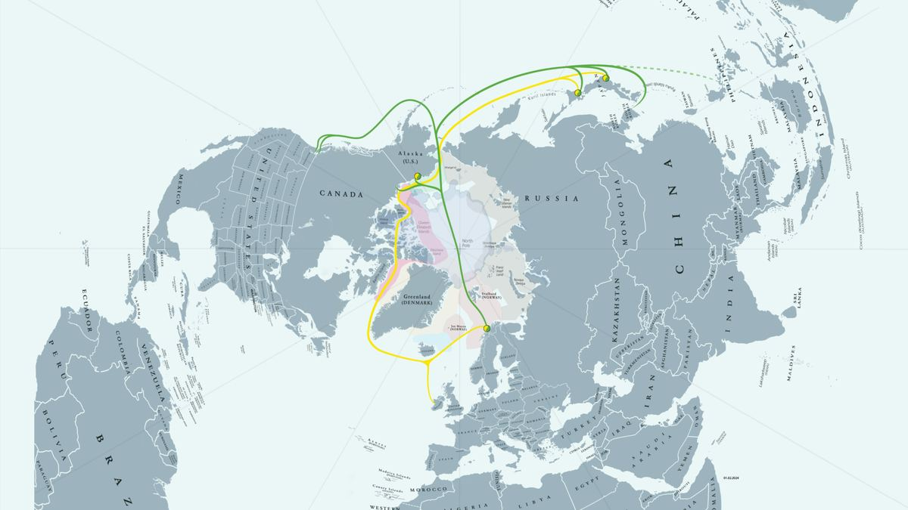
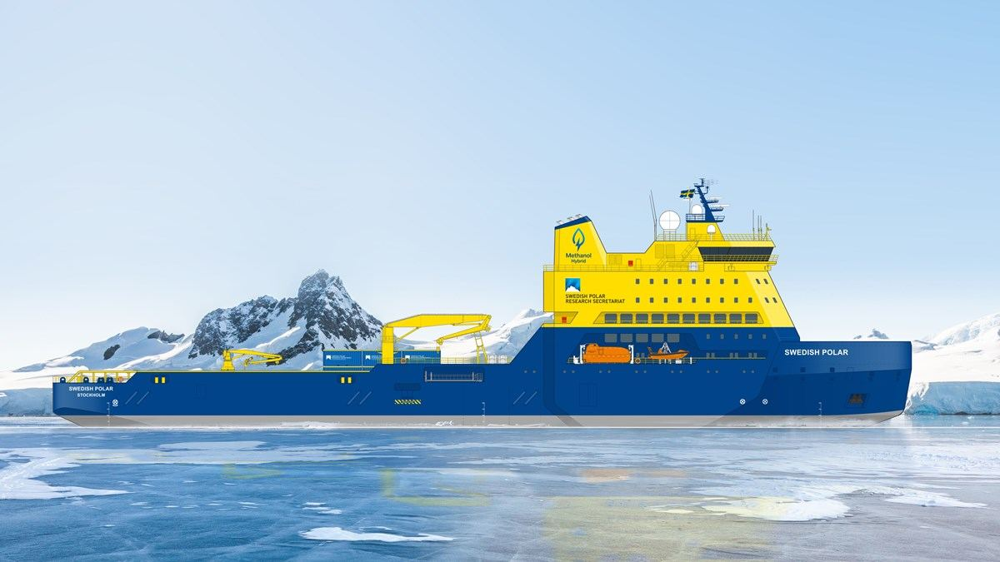
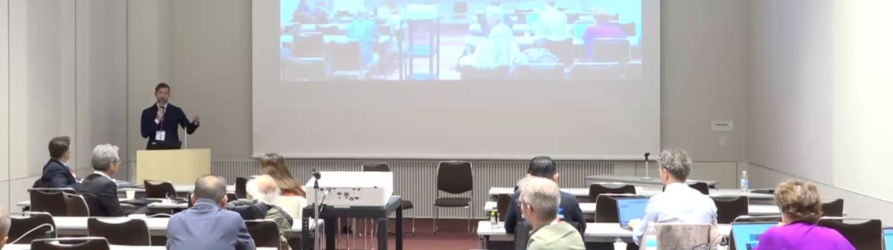
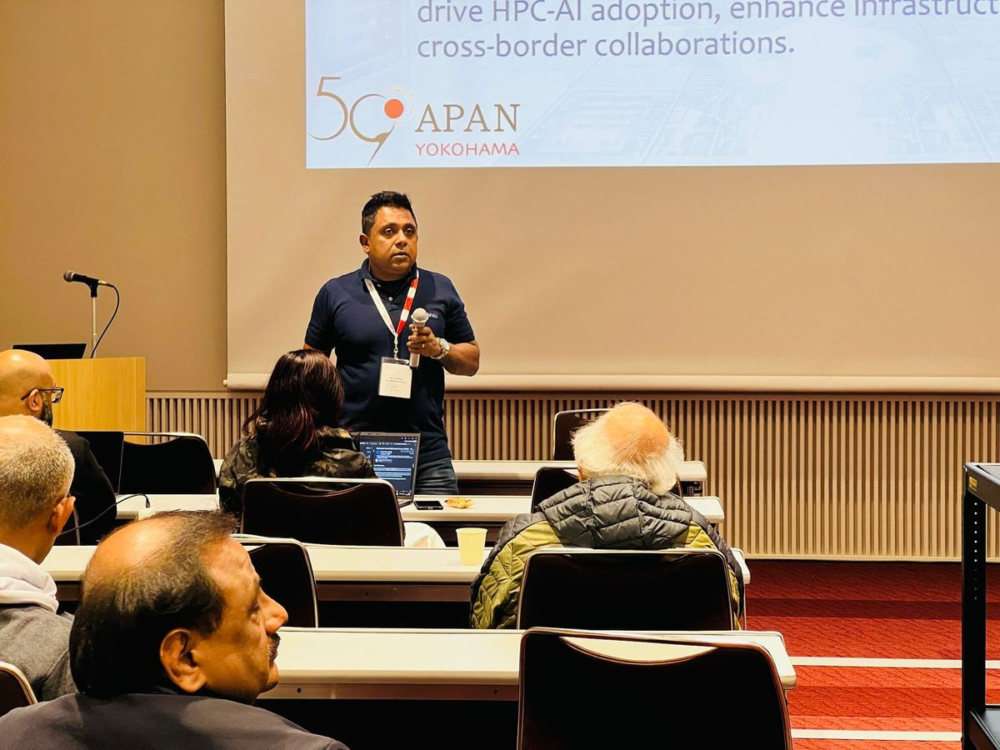

Insights from the APAN59 NREN Leaders Forum: Enabling Innovation in a Connected Asia-Pacific.
The APAN59 REN Leaders Forum, held in Yokohama, Japan, brought together leaders from National Research and Education Networks (NRENs), technology providers, and academic institutions to explore emerging opportunities and challenges in research networking across the Asia-Pacific region. Convened by Prof. Roshan Ragel, CEO of LEARN, originally at APAN56 in Colombo, Sri Lanka, the forum has continuously grown into a regular gathering that enables NREN leaders to freely exchange ideas, address common challenges, and pursue shared opportunities.
The APAN59 edition featured strategic discussions on Arctic connectivity, AI and High-Performance Computing (HPC), and digital assessment technologies, highlighting collaborative models to future-proof infrastructure and advance regional innovation — from NORDUnet's Polar Connect project and SINET's supportive stance, to Inspera's call for proactive industry partnerships and coordinated efforts in AI/HPC capacity building.

The first segment of the APAN59 NREN Leaders Forum featured Valter Nordh, CEO of NORDUnet, whose presence underscored the Forum's growing recognition as a platform for international collaboration and cross-regional dialogue. His session introduced Polar Connect — an Arctic submarine cable project that seeks to strengthen global digital connectivity. Designed to serve both data communications and advanced research applications, Polar Connect is envisioned as the first intercontinental cable to traverse the Arctic Ocean, linking Europe, Asia, and North America through the shortest route possible.
Currently under planning for deployment between 2028 and 2030, the project forms part of NORDUnet's broader Vision 2030, which seeks to establish at least two Arctic routes to enhance resilience, reduce latency, and strengthen digital autonomy of participating economies. The route will pass through the Exclusive Economic Zones (EEZs) of allied economies, and the infrastructure will support smart cable technologies for scientific research in addition to conventional data traffic.

Nordh underscored the growing need for alternative, stable, and high-capacity intercontinental connectivity. Today, nearly 90% of Internet traffic between Asia and Europe travels through the Suez Canal, making it a critical but vulnerable chokepoint. Recent incidents — such as a sunken vessel that damaged undersea cables and remains unrepaired due to security concerns — highlight the urgent need for resilient alternatives. Polar Connect directly addresses these concerns by offering a route of approximately 10,000 km, compared to the 20,000–30,000 km length of existing options via the Suez or North America. As Nordh noted, "this isn't just about speed — it's about digital sovereignty, stability, and future-readiness."

Nordh also highlighted that Arctic connectivity has emerged as a topic of high geopolitical relevance, with increasing dialogue between European and Japanese policymakers around building digital partnerships. Economically, the impact is expected to be substantial: a report commissioned by NORDUnet and the five Nordic NRENs, The Economic Value of Submarine Cables in the Arctic, estimates that fully utilising an Arctic route — such as one connecting Europe to Japan — could boost GDP in the Nordic region by over €1 billion annually. The Hokkaido Prefectural Government of Japan has also expressed interest in the project, seeking to capitalise on the economic opportunities for the benefit of Japan's Northern regions.

Despite its promise, laying cables in the Arctic presents unique challenges: harsh environmental conditions, multiyear ice caps harder than concrete, and extreme seasonal weather that limit installation windows and vessel capabilities. Nordh detailed a three-vessel strategy — an icebreaker to clear paths through the ice, a second to break large remaining blocks, and a specialised cable-laying ship. Sweden, investing heavily in Arctic research, is also building a new icebreaker vessel with year-round cable repair capabilities. Environmental regulations, international permitting, and financial risk-sharing remain critical challenges, with government support essential to securing the research and education segments of the infrastructure.
Polar Connect is not just a commercial infrastructure project — it's a platform for scientific discovery. Nordh introduced the idea of integrating SMART technologies (e.g., Distributed Acoustic Sensing) along the cable, enabling real-time measurement of temperature, acidity, seismic activity, and water flow, crucial for climate and environmental research.
Dr. Francis Lee Bu Sung from SingAREN emphasised that government initiative is essential for projects like Polar Connect to succeed, as hyperscalers and private-sector players are unlikely to take on such high-risk investments without public backing. Nordh agreed, noting that the European Union has already contributed funding and that Sweden has commissioned an icebreaker vessel to support Arctic cable operations. Another attendee raised concerns about sovereignty and security in light of recent cable cuts in Europe — Nordh stressed that while cable security is a global concern, the thickness of multiyear Arctic ice acts as a powerful natural deterrent, and that true security lies in building resilience through redundant cables and monitoring technologies.
Science Information NETwork (SINET) is an NREN operated by the National Institute of Informatics (NII), serving as the digital backbone for universities and research institutions across Japan. At the Forum, Prof. Shigeo Urushidani, Vice Director-General – Information Systems Architecture Science Research Division at NII, expressed strong support for Polar Connect as a valuable opportunity to improve network performance and enable deeper collaboration between Nordic and Japanese institutions, noting growing interest from the Hokkaido Prefectural Government in expanding its digital industry. With Polar Connect, SINET envisions scaling its bandwidth offerings across the ASEAN region and further strengthening the digital resilience of its network.

Inspera's platform includes three integrated applications — Assessment, Proctoring, and Originality Checking — offering a holistic solution for secure, scalable, and accessible academic assessments. Waldgrave observed that industry partnerships with NRENs are often reactive and vendor-based, driven by procurement requirements or tenders that limit deeper collaboration. Instead, he proposed a more proactive, partnership-driven model prioritising the real needs of higher education institutions: opening working groups on relevant topics, collaborating on projects directly with NREN members, and organising regular workshops and webinars.
During the Q&A, Waldgrave addressed the use and misuse of Generative AI in assessments, stressing that the focus must be on responsible use to maintain academic integrity, and that there's a growing need to rethink assessment models in line with emerging technologies while leveraging AI to enable secure remote testing.

The final session, "AI/HPC at APAN," was presented by Dr. Asitha Bandaranayake, CTO of LEARN and Chair of the APAN AI/HPC Working Group, who provided an overview of the group's focus areas and a roadmap for enabling advanced AI and HPC adoption across the region.
Capacity Building — prioritising HPC-AI training programs, summer schools, certification courses, hackathons, and competitions, while strengthening university curricula to bridge the skills gap between academia and industry.
Regional Infrastructure & Data Sharing — developing a shared HPC resource pool for multi-country access to supercomputers, enhancing connectivity through Science DMZ deployments, and establishing a unified data-sharing framework for secure cross-border AI research.
Policy & Governance — aligning national HPC-AI strategies with regional policies, including AI ethics and data privacy standards, and industry incentives such as tax benefits and public-private co-funding.
Following the session, Prof. Roshan Ragel led a discussion inviting NREN leaders to propose immediate, actionable initiatives — including a twinning programme between NRENs. Amber McEwen (REANNZ) shared their approach of a centralised portal listing accessible HPC resources, while Dr. Francis Lee (SingAREN) highlighted close ties with Singapore's National Supercomputing Centre. The discussion concluded with Prof. Ragel encouraging NRENs to commit, by APAN60 in Hong Kong, to sharing personnel for collaborative efforts and identifying potential funding opportunities.
The APAN59 REN Leaders Forum reaffirmed the critical role that NRENs play in shaping the digital future of research and education across the Asia-Pacific. From NORDUnet's Polar Connect project addressing global connectivity resilience, to Inspera's call for proactive partnerships in education technology, each session underscored the value of collective vision. The focus on AI and HPC — led by LEARN and the APAN AI/HPC Working Group — laid out clear strategies for capacity building, infrastructure sharing, and policy alignment, setting the stage for positive outcomes leading into APAN60.
Open the original PDF ↗